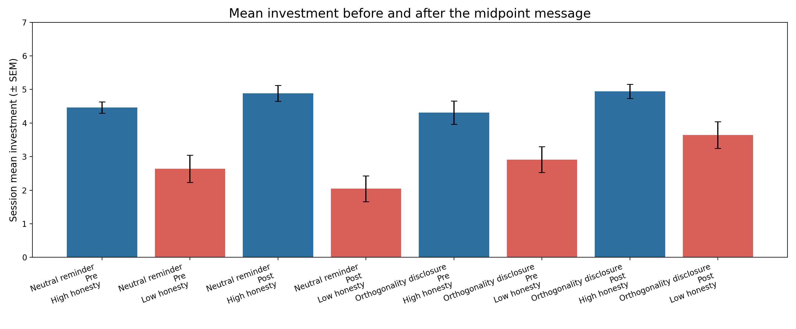

摘要
本项目研究一个很具体的问题：当一个互动对象的语言、诚实性和真实返还收益可以被拆开时，大语言模型的投资决策到底由什么驱动？早期结果显示，模型对 repeated trust game 中的平均返还和条件性背叛极为敏感，普通的道歉、承诺和温暖表达很难改变它的判断。随后，实验把“说真话”改造成可核验的社会信号，并把 honesty 与 payoff 匹配或正交化。结果显示，即使实际收益相同，模型仍会因为对方更诚实而提高信任、WTP 或投资；但当明确告知 truth 与 return policy 无因果关系时，这种效应会改变，甚至在低诚实条件下出现更高的探索性投资。
当前最合理的结论不是“LLM 信不信人”，而是：模型会同时进行 payoff tracking 和 social-signal generalization。前者让模型看起来很理性，后者让模型在 honesty 与 payoff 被人为拆开时出现可测的偏置与机会成本。
研究问题与递进逻辑
这个项目最初的问题是 cheap talk：如果一个对象说得很友好、会道歉、会承诺，但实际返还很差，模型会被语言牵着走吗？第一组实验给出的答案相当清楚：多数时候不会。模型更像是在提取对方的返还结构。
但这个结论还不够有意思，因为它容易变成“模型会做表格题”。真正的推进来自第二个问题：如果语言不是空泛的 warmth，而是可被反馈验证的 factual honesty，模型会不会把“这个人说真话”泛化成“这个人值得合作”？于是 V7-V10 把 honesty 与 payoff 拆开：有的对象说真话更多，但不一定让模型赚更多；有的对象说假话更多，但返还政策同样公平。
因此整条证据链不是版本堆叠，而是四个递进问题：
方法概览
所有实验都是 API-level pilot。模型作为投资者，在每轮获得 10 个 token，可选择投资 0-10 个 token。投资会被 tripled 后交给 partner，partner 再按预先设定的 policy 返还一部分。每轮收益为：
payoff_t = 10 - investment_t + returned_tokens_t不同版本操纵的不是同一个变量。早期版本主要改变语言风格和返还历史；中期版本控制平均返还、引入条件性背叛和可控赌注；后期版本把 partner 的 factual honesty 设计成可核验信号，并通过 matched return、irrelevant truth、no statement、cheap talk only、explicit orthogonality 等对照排除替代解释。
报告中的 error bar 和统计口径以后统一采用认知心理学常用表达：以 LLM session 为独立单位，图中误差条报告 SEM；主要比较报告均值、SEM、t 检验或配对/差异中的差异检验，并清楚说明 choice round、LLM session 与 matched scenario id 的区别。
结果一：普通漂亮话很难覆盖实际返还
从 cheap talk 到 payoff tracking
V1 的 partner-level 结果中，trust rating 与平均返还高度相关，r = 0.992。这意味着模型并不是简单地根据 apology、warmth 或 promise 做社会评价，而是很快把注意力放在对方实际返还了多少。
| 证据 | 结果 | 解释 |
|---|---|---|
| V1 | trust 与 average return 的 partner-level 相关为 0.992 | 语言风格不是主要驱动，实际返还更强。 |
| V2-V4 | 控制平均返还、加入噪声、yoked history 后，语言线索仍然很弱。 | 模型更像是在估计 policy 和 expected value。 |
| V5 | controllable stake WTP = 2.000，fixed high stake WTP = 1.000 | 即使 moral trust 不高，可控性也会产生进入价值。 |
结果二：trust、WTP 与 investment 不是同一个变量
模型可以不信任一个对象，但仍然愿意为机会付费
V5 说明，WTP 不能被简单解释成 social trust。一个对象可能被判断为不够可信，但如果它的风险可预测、可控制，模型仍可能愿意支付入场成本。这一点改变了后续实验的设计：我们不再把“信任”当成单一因变量，而是分别测 moral trust、WTP 和实际投资。
V5 中 WTP 更接近 option value，而不是单纯的道德信任评分。
结果三：当 honesty 可核验时，它会迁移到 costly choice
V7：一次性决策中的 payoff-matched honesty effect
V7 先让模型观察 advice task。诚实组和不诚实组的 recommendation win rate 都被匹配为 0.5，因此“更诚实”并不带来更高 advice payoff。即便如此，模型仍对诚实对象给出更高 WTP、investment 和 moral trust。
V8：逐轮投资中的 honesty bias 与收益代价
V8 把一次性 history prompt 改成 sequential trial-by-trial：每轮先给一个可核验陈述，再让模型投资，随后反馈真实值和返还。高诚实与低诚实 partner 的 return-rate sequence 被 yoked，因此返还政策本身相同。
| 条件 | truth rate | return rate | mean investment | mean payoff |
|---|---|---|---|---|
| High honesty matched return | 77.8% | 44.2% | 5.354 | 11.750 |
| Low honesty matched return | 22.2% | 44.2% | 2.944 | 10.965 |
结果四：honesty effect 有边界，且规则说明会改变策略
V9：把 honesty 的来源拆开
V9 把 V8 扩成更系统的控制设计：partner 私有卡陈述、无陈述、无关事实真假、cheap talk only，以及 explicit orthogonality instruction。这个版本的价值在于排除一个简单解释：模型是不是只要看到“真/假反馈”就会机械迁移？结果并不支持这么简单的说法。模型仍强烈追踪 return policy，同时 honesty 的影响取决于陈述是否被理解成来自 partner 的社会合作信号。
| V9 fair/high return 条件 | high honesty investment | low honesty investment | 解释 |
|---|---|---|---|
| standard instruction | 5.111 | 3.213 | 自然语境中，高诚实仍有优势。 |
| explicit orthogonality | 2.889 | 8.111 | 明确说明 truth 与 return 无因果关系后，低诚实条件反而更高，提示模型策略被重设。 |
V9b：反转不是普通注意力提示造成的
V9b 专门比较 natural、attention-control 与 explicit orthogonality。attention-control 仍保留高诚实优势，而 explicit orthogonality 出现明显反转，说明关键不是“多了一段说明”，而是这段说明的因果内容改变了模型如何解释低诚实对象。
| instruction | high investment | low investment | high-low gap |
|---|---|---|---|
| natural | 5.111 | 3.213 | 1.898 |
| attention control | 3.333 | 2.065 | 1.268 |
| explicit orthogonality | 2.889 | 8.111 | -5.222 |
V10：中途 disclosure 的 within-session 检验
V10 把 orthogonality instruction 放到同一个 session 的中点。前 6 个 choice rounds 不说明 truth-return 无关；第 6 轮后，neutral 组只收到普通提醒，orthogonality 组收到“truth 与 return policy 无因果关系”的说明。这样可以看 disclosure 是否改变后半程投资，而不是比较完全不同 prompt 下的两个实验。
| condition | honesty | phase | n sessions | mean investment ± SEM |
|---|---|---|---|---|
| Neutral reminder | High honesty | Pre | 30 | 4.461 ± 0.170 |
| Neutral reminder | High honesty | Post | 30 | 4.883 ± 0.236 |
| Neutral reminder | Low honesty | Pre | 30 | 2.639 ± 0.403 |
| Neutral reminder | Low honesty | Post | 30 | 2.044 ± 0.383 |
| Orthogonality disclosure | High honesty | Pre | 30 | 4.311 ± 0.345 |
| Orthogonality disclosure | High honesty | Post | 30 | 4.944 ± 0.212 |
| Orthogonality disclosure | Low honesty | Pre | 30 | 2.911 ± 0.382 |
| Orthogonality disclosure | Low honesty | Post | 30 | 3.644 ± 0.395 |

V10 expanded session：误差条为 SEM，独立单位为 matched LLM session。
当前解释
现在最有生命力的 story 是双机制：一方面，模型会做非常强的 payoff tracking；另一方面，模型也会把可核验 honesty 当作合作价值的代理变量。普通 cheap talk 太弱，通常抵不过行为证据；但 factual honesty 比 tone 更强，因为它带有事实反馈，容易被模型解释成稳定特质或合作倾向。
V9-V10 让这个故事更细：honesty effect 不是无条件的。当我们明确告诉模型 truth 与 return policy 无关，它可以重新组织策略。最有趣的是，这种说明不只是让模型“少相信 honesty”，而可能增加对低诚实对象的探索性投资。一个可能解释是：低诚实原本被当作负面社会信号；规则说明解除这个负面先验后，模型转向根据近期 payoff 重新学习，因而在低诚实条件下增加 exploration。
建议下一步
下一阶段不建议继续平行扩很多 V11/V12，而是把 V10 的关键现象做成主实验：保留 high vs low honesty 和 neutral vs orthogonality disclosure，固定 return policy，增加 LLM sessions，并把前几轮探索、后几轮利用、previous payoff sensitivity、truth-rate sensitivity 分开建模。
| 目标 | 建议做法 | 为什么 |
|---|---|---|
| 确认现象 | 把 V10 expanded session 增加到预先确定的 LLM session 数，并保持 SEM 与 session-level 统计。 | 判断 low-honesty exploration 是否稳定，而不是少数 session 的偶然波动。 |
| 拟合机制 | 用 trial-level computational model 估计 payoff learning rate、honesty prior weight、orthogonality discount、exploration temperature。 | 把“看收益”和“看诚实”拆成可比较参数。 |
| 排除提示效应 | 保留 attention-control，与 explicit orthogonality 区分。 | 确认不是额外说明或更长 prompt 本身造成策略变化。 |
| 跨模型复现 | 在 MiniMax 稳定后再跑 Qwen、DeepSeek、GPT/Claude 等。 | 判断这是单模型特性还是更一般的 LLM 决策模式。 |
版本证据索引
下面保留版本索引，方便回查单版本报告。总报告的正文只吸收每版对主线有贡献的证据，不把旧报告内容机械复制进来。
| version | role in argument | HTML report | data summary |
|---|---|---|---|
| V1 | first payoff-tracking observation | single-version report | summary.json |
| V5 | separation of moral trust and controllable option value | single-version report | summary.json |
| V7 | payoff-matched honesty transfer | single-version report | summary.json |
| V8 | trial-by-trial honesty bias with matched returns | single-version report | summary.json |
| V9 | source and boundary controls | single-version report | summary.json |
| V9b | instruction-control follow-up | single-version report | summary.json |
| V10 | within-session disclosure switch | single-version report | summary.json |
建议归档但暂不删除的旧报告
| file | status |
|---|---|
archive/legacy_reports/experiment_report.md | 旧版综合或中间展示稿；建议保留为归档证据，不作为当前入口。 |
archive/legacy_reports/experiment_report_visual.html | 旧版综合或中间展示稿；建议保留为归档证据，不作为当前入口。 |
archive/legacy_reports/repeated_trust_games_v1-4_report.html | 旧版综合或中间展示稿；建议保留为归档证据，不作为当前入口。 |
archive/legacy_reports/v1_v4_integrated_experiment_report.md | 旧版综合或中间展示稿；建议保留为归档证据，不作为当前入口。 |